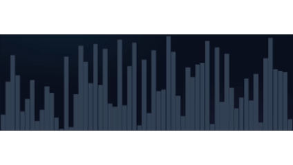
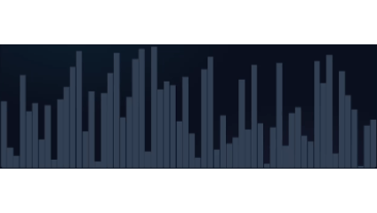

El Bubble Sort compara pares de elementos adyacentes y los intercambia si están en el orden incorrecto. Repite este proceso hasta que la lista está ordenada. Los elementos "más grandes" van subiendo como burbujas al final de la lista en cada pasada.
Base: Comparación e intercambio de vecinos.

El Insertion Sort construye la lista ordenada de a un elemento a la vez. Recorre la lista, tomando un elemento y colocándolo en su posición correcta dentro de la parte de la lista que ya está ordenada. Es similar a ordenar cartas en la mano.
Base: Inserción de un elemento en su lugar correcto dentro de una sublista ya ordenada.
El Selection Sort divide la lista en una parte ordenada y una no ordenada. En cada paso, encuentra el elemento más pequeño (o más grande) de la parte no ordenada y lo intercambia con el primer elemento de la parte no ordenada, moviéndolo al final de la parte ordenada.
Base: Selección del mínimo (o máximo) y colocación al inicio de la sublista no ordenada.

El Quick Sort es un algoritmo eficiente que utiliza la estrategia Divide y Vencerás. Elige un elemento como pivote y particiona los demás elementos en dos sublistas: aquellos menores que el pivote y aquellos mayores. Luego, aplica recursivamente el mismo proceso a las dos sublistas.
Base: Partición de la lista alrededor de un elemento pivote.
El Merge Sort también usa Divide y Vencerás. Divide recursivamente la lista a la mitad hasta que solo quedan elementos individuales (que por definición están ordenados). Luego, fusiona (combina) estas sublistas ordenadas para producir sublistas ordenadas más grandes hasta que solo queda una lista, que es la lista original ordenada.
Base: Fusión de sublistas ordenadas de forma eficiente